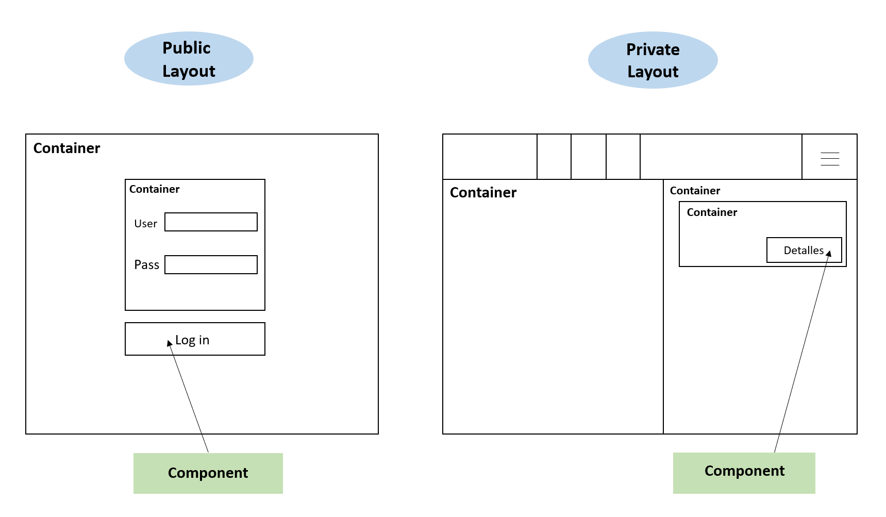

1. Introduction and Goals
Viade is a route management system which uses Solid and has been developed using the React framework.
1.1. Requirements Overview
| Requirement | Description |
|---|---|
Routes |
Mainly, Viade allows users to create routes by establishing the points that make up that route, store them in their own POD, view them on a dynamic map and share them with other users that they can add as friends. |
Decentralized architecture |
The system is based on a decentralized architecture in which the data is stored in the user’s own POD, so it is not the application who saves the data and it is the user who decides who can access it. This guarantees greater data privacy and is achieved by following the proposal created by SOLID. |
Files |
Viade allows the user to share both routes and different types of files (images, videos, documents …) with their friends. In addition, they will receive the corresponding notifications when something has been shared with them. |
Groups |
It also allows you to create groups of friends with whom you can share both routes and different types of files (images, videos, documents …). |
Interoperable |
Since there are different Viade applications, each one created by a development group, one of the requirements for all of them is that they have to be interoperable with the rest. For this, a standard to be followed has been agreed and we have developed our Viade taking it into account. Therefore, Viade is interoperable and allows you to manage routes created by users who use different applications. |
1.2. Quality Goals
Quality goals ordered by priority from more important to less important
| Nr. | Quality | Motivations |
|---|---|---|
1 |
Privacy |
The user data should be private and only them can share it, all the data should be stored in individual solid pods. |
2 |
Usability |
The app should be simple to understand and to use. This app is meant for users with no technical knowledge |
3 |
Interoperability |
The app should be interoperable with the other Viade apps |
4 |
Modularity |
The app should be modular by using react components to build the app easily and efficiently |
5 |
Testability |
The app should be able to be tested |
1.3. Stakeholders
| Role/Name | Contact | Expectations |
|---|---|---|
Experienced Users / Hikers |
Refers to all users with experience in the world of trekking and traveling |
Use the app as a tool to improve their experience thanks to all its features, keeping the simplicity |
Newcomers |
It covers all new users in the theme of the application |
Being able to learn to use the system intuitively and without any problem in spite of their low experience |
Project developers |
They are the developer team who’ll carry out the design and implementation of the project |
Creating a system that meets the requirements and quality goals initially established throughout the whole development, dealing with any kind of issue, being able to solve them and learning from them |
Subject teachers |
They guide and evaluate the development team and provide them the required frameworks to carry out the project. In addition to resolving all doubts that come up in the development process |
They expect developers to learn to use and familiarize with new development environmets and technologies which are possibly new for them, also learning to deal with teamwork |
SOLID Community |
All contributors and people related to the SOLID Project |
They expect that anyone interested in the SOLID project ask them for help when necessary, apart from learning more about decentralized technologies, and giving them more importance |
Mobile/Small screen users |
Anyone using the app in a mobile/table or small device |
They expect being able to use all big-screen features without any kind of problem. Some web applications get distored when using small devices, that’s not gonna happen with Viade. |
2. Architecture Constraints
2.1. Technical Constraints
- PODs
-
Our project architecture will be decentralized, so that user data is separated from the application that uses it. To this we are following Solid especifications. Solid is based on network technology that makes users owners of their own data, which they store using their own PODs.
- React
-
We will develop ViaDe using React: a JavaScript library used to create user interactive interfaces which is based on encapsulated components which manage their own state and they are composed to create complex user interfaces. React allows you to design simple views for each application state, and it will update and render efficiently the correct components whenever their data changes
2.2. Organizational Constraints
- GitHub
-
It is a collaborative development platform to control versions in which we have the repository and work on it.
- Time
-
We are developing this application in a limited and reduced amount of Time that it is defined by the duration of the subject Software Architecture, which lasts about 3 months.
2.3. Documentation Constraints
- Arc42
-
We are using the format Arc42 for the documentation of the ViaDe project. It provides a template for documentation and communication of software for lean and agile development.
3. System Scope and Context
3.1. Business Context
| Entity | Context |
|---|---|
User |
A user can create, save, and manage his own routes, he is also able to see the shared ones of another users he follows |
Friend |
It’s a user who follows another one (solid friend relationship), being able to share their routes with them |
Group |
Composed by a set of users |
Route |
It’s the main element of the business, it is a set of geographical points and waypoints (which can be named), which represent a real life route or travel |
Waypoint |
They’re part of a route, optionally added, and used to highlight important places, they resemble a common route point, with name and description |
3.2. Technical Context
The system is based on the SOLID architecture created by Tim Berners-Lee, which focus on the decentrilzation of the web. Each user of the application will have a SOLID POD linked to his account. In SOLID, a POD is the main unit of storage, it can be thought as a private webpage for each user. In your POD you can store all your information and also choose whether you want each piece of data to be public or private, and you can even choose who you want to share that information with.
So, as explained above, each user of the application has a POD of his own. The application has to be connected to the Internet in order to communicate with that POD, as it is sort of an online server containing your data. Once you are online, you can start uploading routes to your profile (The POD) and then choose which of your friends can view which route.
The web application itself will be written in Javascript using React, an open-source library that makes easier and more complete the process of setting up an user interface.
4. Solution Strategy
Our application is based on the REACT framework and uses a SOLID architecture where data is stored in a decentralized way. We’ll use the software architecture pattern known as Flux, recomended for React applications.
4.1. Back-end
4.2. Front-end
We are using React js library to do the user interface and we are focusing on making a user friendly application. We need to show the points in a map somehow, so we decided to use the google maps api as we already have some api keys. As long as the project is in development, we can keep using this api because is free. If in the future there are hundreds of users viewing routes at the same time, we’ll need to pay but now we don’t need to worry about that.
5. Building Block View
This setion consits of the static decomposition of our system into building blocks, showcasing their inner dependencies.
With this general view we aim to give an idea of our source code structure, so that is is easily to understand without implementation details.
5.1. Viade Whitebox
We begin the decomposition by displaying the white box of the overall system of Viade application. In it we find its black boxes, that represent all the contained building blocks.
We have chosen the Flux arquitecture pattern for the system as it is one pattern we think that goes well with React. It complements React’s composable view components by utilizing a unidirectional data flow. The part of the views are the functions that transform the model of the virtual DOM, and the part of the services represent the model.
-
Views will be in charge of doing the client-side web. It uses the services of stores to persist users data and its routes data.
-
Services classes that receive information from the views and performs operations to insert, modify o remove data from a POD.
-
Utils contains GPX parser, definitions of modals, some common style for components, management of error showing. Also,is where the LDflex helper is located and some more methods for utilities of permissions and notifications.
-
Documentation is defined in the docs folder, and inside it there are many arc42 files and another folder for images.
-
High Order Components or HOCs where the loading of components is managed.
-
Hooks is a folder containing the functionality of the build-in hook useEffect from React that applies some effects for the mouse clicking.
5.2. Level 2
5.3. Services
| Service | Description |
|---|---|
Base Service |
This is all services super class, used to perform operations for permissions, files, and all the data in common stored in the pod. |
Route Service |
This service allows to operate with routes: obtain the routes of a user, to publish one route, or delete it… |
User Service |
It will be used for obtaining a username from its webId. |
Group Service |
Service to get all groups, read, create, delete a group and those types of operations on groups. |
Comment Service |
In order to post a comment, delete it or read comments. |
Friend Service |
This will manage friendships between users, adding a friend, delete or obtain friends of a user. |
Multimedia Service |
It is used to perform uploads or deletions of media elements in the pod. |
Covid Service |
It is used to check Covid-19 current status on route waypoints in order to valorate if a route is safe to do. |
5.4. Views
Views are composed of components grouped by containers, displayed using different layouts.
| Blackbox | Description | Examples |
|---|---|---|
Containers |
The containers are components formed by other components. In Viade could be a part of the page view or the whole page view. |
Social, Login, MyRoutes, Register, Welcome, PageNotFound |
Components |
Components in our case are hooks, which we are using to divide parts of the code in a way that we can recycle them using them in other components or containers. |
RouteView, RouteCreationPanel, Map, Multimedia, Notifications … |
Layouts |
We use layouts to distinguish between a logged user and a an anonymous user with a private layout, a public layout and a not-logged-in layout. |
NotLoggedInLayout, PrivateLayout, PublicLayout |

6. Runtime View
These are some representations of the ViaDe scenarios.
6.1. Store information
It is a decentralized information storage system, in which users send the information to the app and save it in their respective POD

Initially, the user will have to log in, with an account with their own POD or using a POD provider. This POD is where all the information collected when using ViaDe will be saved.
6.2. Share information
To see the routes of your friends you will interact with the application and this will be the one that takes the information of your friends POD if you are allowed access to that information.

===Read shared information

7. Deployment View
| Node/Artifact | Description |
|---|---|
User Computer |
The device used by the user to connect to the application through internet |
Browser |
A recent browser to access the ViaDe page application. All major browsers (Chrome, Firefox, Safari, IE / Edge) should work. |
Web Host |
The web site where the application is deployed (GitHub-Pages) |
React |
Library for building user interfaces |
Solid pods js Libraries |
Libraries for accessing the Solid Pods data like LDflex or solid-file-client |
Solid POD |
User personal pod where his data is stored |
8. Cross-cutting Concepts
8.1. Domain
As explained in previous sections, there will be the following concepts related to the domain:
-
User
-
Friend (relationship, check glossary)
-
Group of users
-
Route
Apart from the above, we could talk about the POD concept but we won’t, we’ll explain why later.
8.2. User Experience
The point of this application is to try to simplify the UX, therefore it’s important to make the user forget about the existence of PODs in the mean of the possible in order to simplify the usage and familiarize more easily. We want the application to have a UX that remembers to big social networks (i.e: Twitter, Facebook), because almost any potential user will know how to use it.
8.2.1. User interface
Facing the user interface, we want it to be very intuitive, in addition to maintaining a clean and simple aesthetic.
8.2.2. Ergonomics
To achieve a simple UI it’s a must to minimize the features shown, letting the user to explore and get used to the main ones. It’s not about overwhelming the user with many different features, menus and options.
8.3. Safety and security
Thanks to the use of POD the concept (SOLID Project), data will be secure and we won’t have to worry about the that.
8.4. Architecture and design patterns
We’ll use Flux architectural pattern, due to React usage as explained before, components contains view but algo all its related logic, and model is managed by all existing services.
8.5. Under-the-hood
8.5.1. Persistence
We won’t directly store users data, we will rely on SOLID PODs for that task, to accomplish one of the SOLID project goals, decentralize the data.
9. Design Decisions
| Date | Decision | Participants | Pros | Cons |
|---|---|---|---|---|
17/02/2020 |
Usage of React over React Native |
Whole group |
|
|
28/02/2020 |
Usage of Google Maps API |
Whole group |
|
|
23/03/2020 |
Usage of viadeSpec’s JSON-LD standard |
Whole group |
|
|
04/04/2020 |
Storage of groups using a JSON |
Álvaro Tango Fernández, Marcos Álvarez Vidal, Sergio Corral Cristo |
|
|
13/04/2020 |
Adaptation to small screens (Mobile devices) |
Whole group |
|
|
13/04/2020 |
Usage of Enzyme to do unit testing |
Whole group |
|
|
20/04/2020 |
Implementation of a COVID related utility |
Whole group |
|
10. Quality Requirements
In this part of the documentation, we will talk about the most important quality requirements.
10.1. Quality Tree
First, we will show the quality tree (ATAM) with quality attributes ordered from highest to lowest priority.
10.2. Quality Scenarios
Next, we will explain some quality scenarios, the quality attribute or attributes to which they belong and the priority of each of them.
| Quality Attribute | Scenario | Priority |
|---|---|---|
Privacy and security |
Each user have a private account and no one can access it without the password. |
Very high, Very high |
Privacy and security |
The system will not allow a user to access another user’s route if the latter has not shared it with him. |
Very high, Very high |
Maintainability |
Developers with REACT experience and Flux architecture knowledge will have no trouble maintaining the app. |
Medium, Very high |
Interoperability |
The routes created with another Viade application can be loaded and managed. |
High, High |
Usability |
Less than 30 minutes to learn how to use the basic functions of the application. |
High, Very high |
Testability |
Adding new tests to the project will not affect the functions and tests already created. They will be new additions that will check new functions or existing ones. |
Medium, High |
Internationalization |
Just add a button and a file with the translation into another language to add this new language to the application. |
Medium, Medium |
11. Risks and Technical Debts
This is a table of the risks we have taken and the safeguards:
| Risk | Safeguard |
|---|---|
Lack of interactivity with the other route applications, due to mismatches in the way the data is stored. |
Make a standar with other groups, which can be found in https://arquisoft.github.io/viadeSpec/ |
Hard and not intuitive interaction with the application. |
Developing and taking decisions having user experience always in mind, avoiding adding complex features. |
React framework makes possible developing applications in a quick and easy way, among several reasons due the JavaScript-like syntax usage, which can make error debugging more difficult. |
Using a continuous integration tool like travis, to automatically test every change before deploy. |
Technical Debts
-
This project is limited with a period of 3 months. We can’t afford all the quality scenarios, so we need to take priorities.
-
Multimedia route management could be better, we couldn’t afford improving it due time deadlines.
-
Services related code might be cleaned and refactored.
-
Performance is not as good as we initially expected because we follow the viade specification in order to have interoperability
12. Glossary
| Term | Definition |
|---|---|
Solid |
It is a data decentralization project on the Web, led by Tim Berners-Lee, whose objective is to change the way in which Web applications operate, being the user who decides where they store their data and with whom they share, improving this way their privacy. |
React |
It is an open source Javascript library for creating user interfaces with the aim of making easier the development of single page applications. |
POD |
Personal place of the user where his information is stored. |
User |
Refers to the user of the application. |
Relationship |
Refers the fact that one user follows another one. |
ATAM |
Tree that represents the quality attributes of a software project. |
Quality Attribute |
Non-functional characteristics that are considered desirable in a software system. |
Quality Scenario |
Specific requirement of a quality attribute. |
About arc42
arc42, the Template for documentation of software and system architecture.
By Dr. Gernot Starke, Dr. Peter Hruschka and contributors.
Template Revision: 7.0 EN (based on asciidoc), January 2017
© We acknowledge that this document uses material from the arc 42 architecture template, http://www.arc42.de. Created by Dr. Peter Hruschka & Dr. Gernot Starke.